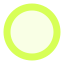
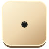
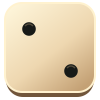
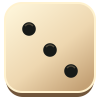
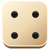
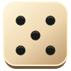
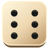

Фото доски справа в баннере рейтинга. Фрагмент с фоном и обрезанным нижним краем как в макете; ставить справа, не растягивать.
PNG — исходное разрешение 1×. SVG — воссозданные векторы. Шахматный фон показывает прозрачность. board-empty собран из чистых участков исходного поля.
Фото доски справа в баннере рейтинга. Фрагмент с фоном и обрезанным нижним краем как в макете; ставить справа, не растягивать.

Кубок слева от личного рейтинга. Отделён от тёмного фона.

Кубок перед заголовком «Рейтинг игроков».

Медаль 1-го места. Цифра уже внутри; только для этого места.

Медаль 2-го места. Цифра уже внутри; только для этого места.

Медаль 3-го места. Цифра уже внутри; только для этого места.

Чёрная фишка сверху. Повторять для каждой фишки; тень добавлять CSS.

Светлая фишка сверху. Повторять для каждой фишки; тень добавлять CSS.
Назад
Меню, три точки
Правила
Режим с ботом
Режим онлайн
Навигация: игры
Навигация: друзья
Навигация: профиль
Отмена хода
Чат
Силуэт соперника, поверх круглого фона
Силуэт своего игрока, поверх круглого фона
Пустая доска: рамка оригинальная, поле собрано из чистых полос исходного макета. 24 пункта. Текстура местами повторяется; не извлечённый скрытый слой.

Чистый фрагмент дерева из середины поля; небольшой образец, не HD-текстура.

Чистый фрагмент тёмного фона; использовать с CSS-градиентом, при повторении возможны швы.
Векторная кнопка play без потери качества при масштабировании
Галочка кнопки подтверждения
Молния статуса хода
Стрелка «Все»
Индикатор сложности easy; подпись отдельно текстом
Индикатор сложности medium; подпись отдельно текстом
Индикатор сложности hard; подпись отдельно текстом

Кольцо допустимого хода
Кольцо выбранной фишки

Кубик 1; геометрически правильные точки. Воссозданный вектор в цветах макета, не фотосрез.

Кубик 2; геометрически правильные точки. Воссозданный вектор в цветах макета, не фотосрез.

Кубик 3; геометрически правильные точки. Воссозданный вектор в цветах макета, не фотосрез.

Кубик 4; геометрически правильные точки. Воссозданный вектор в цветах макета, не фотосрез.

Кубик 5; геометрически правильные точки. Воссозданный вектор в цветах макета, не фотосрез.

Кубик 6; геометрически правильные точки. Воссозданный вектор в цветах макета, не фотосрез.
Пример сборки из пустого поля и отдельных фишек. По 15 фишек каждого цвета; это проверка размещения ассетов, а не реализация игровых правил.